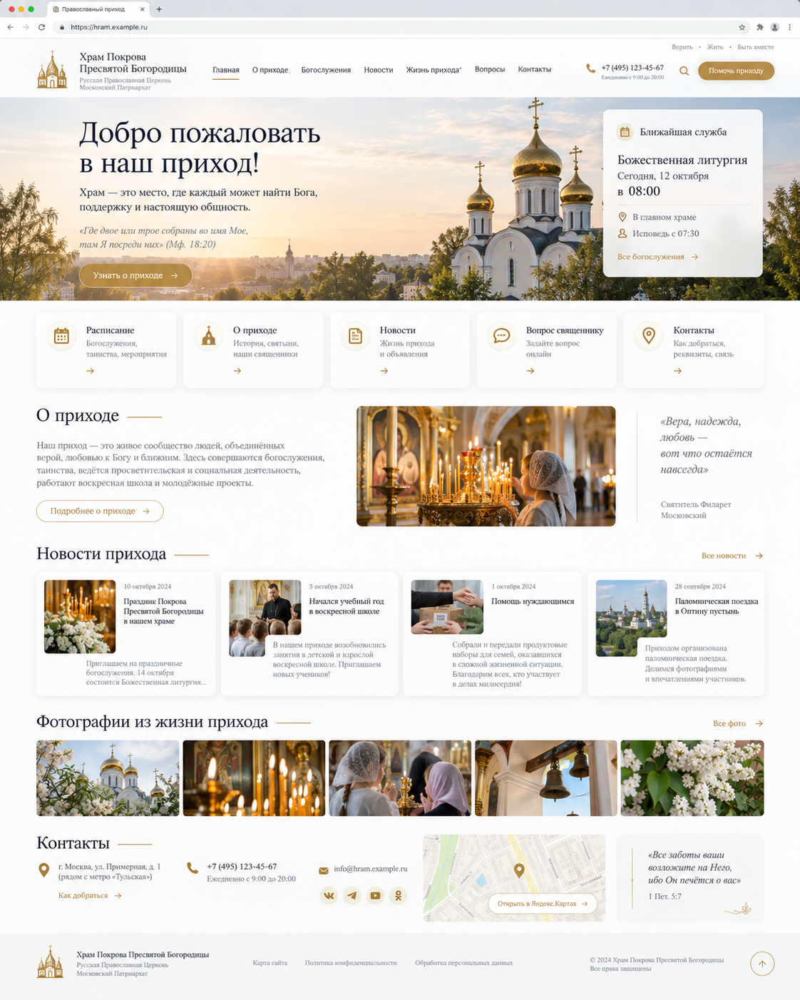
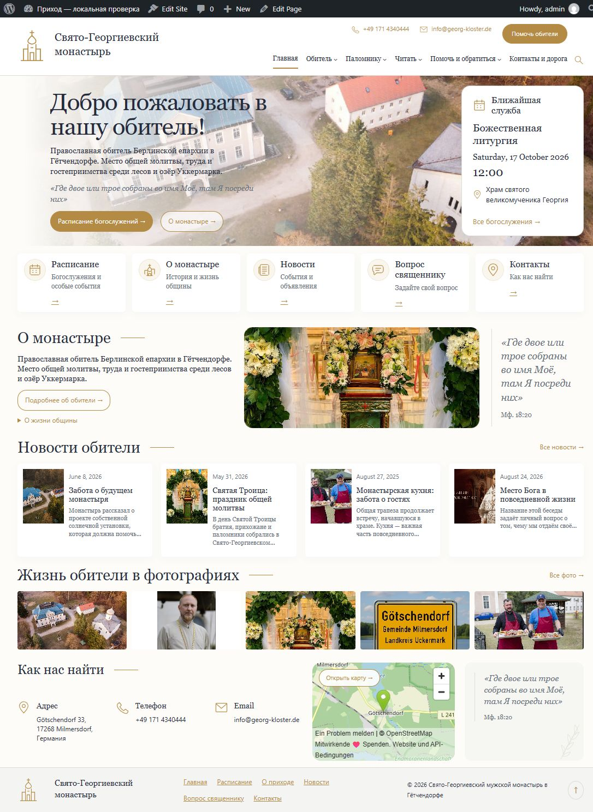
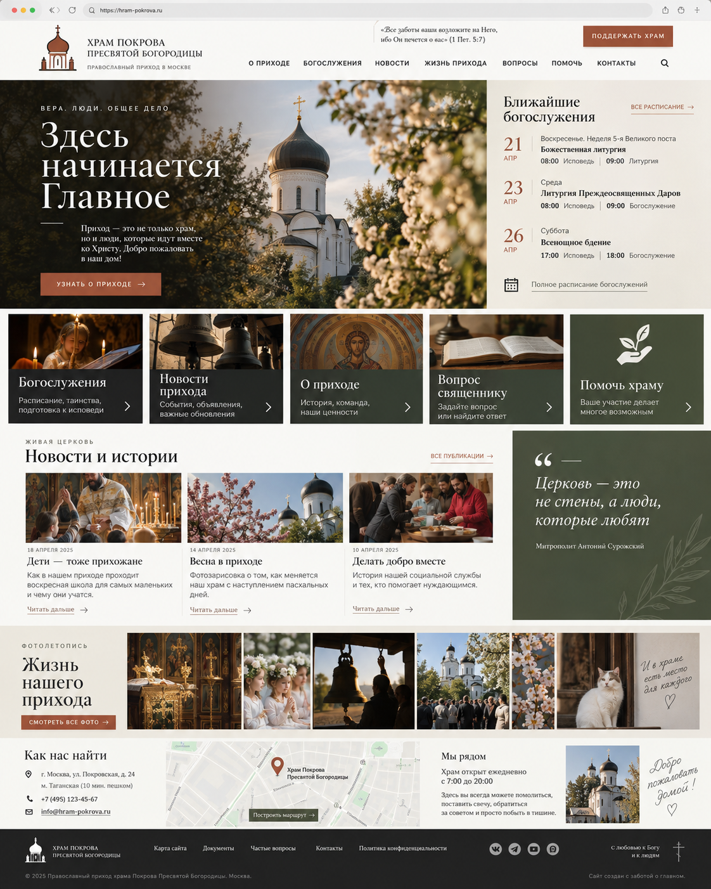
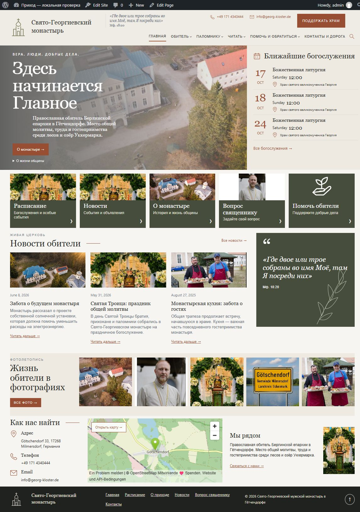
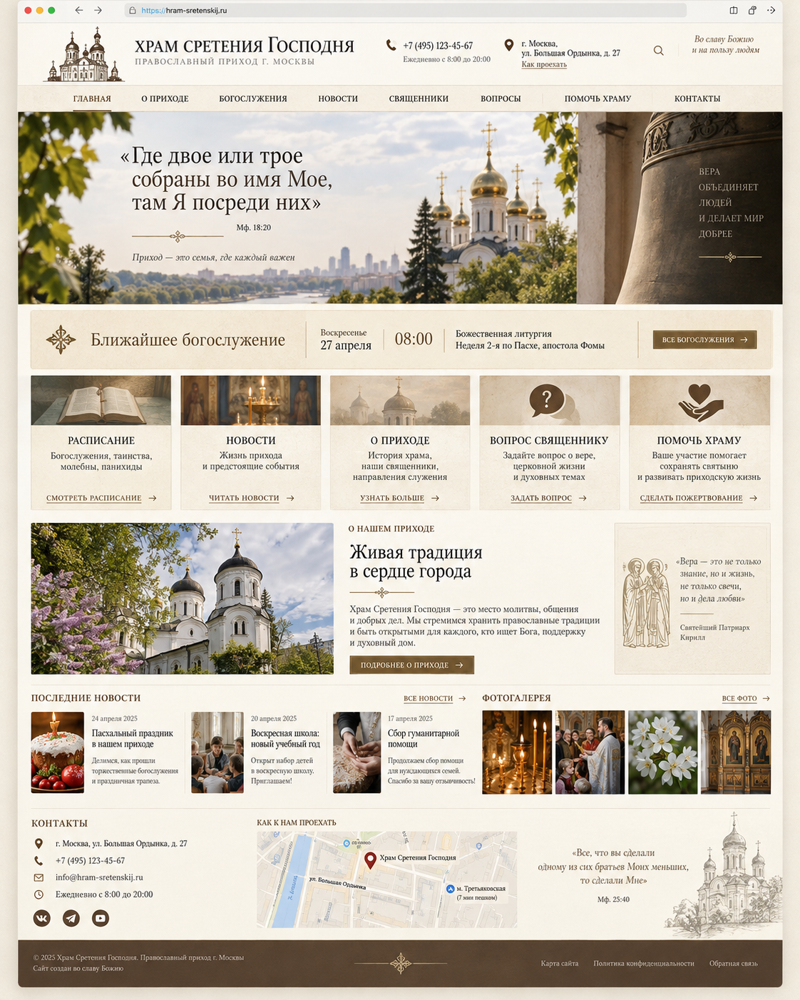
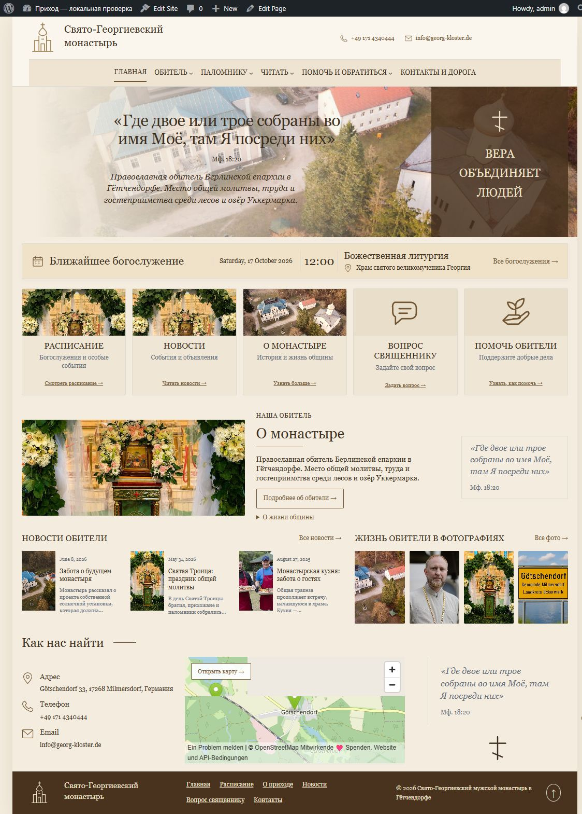
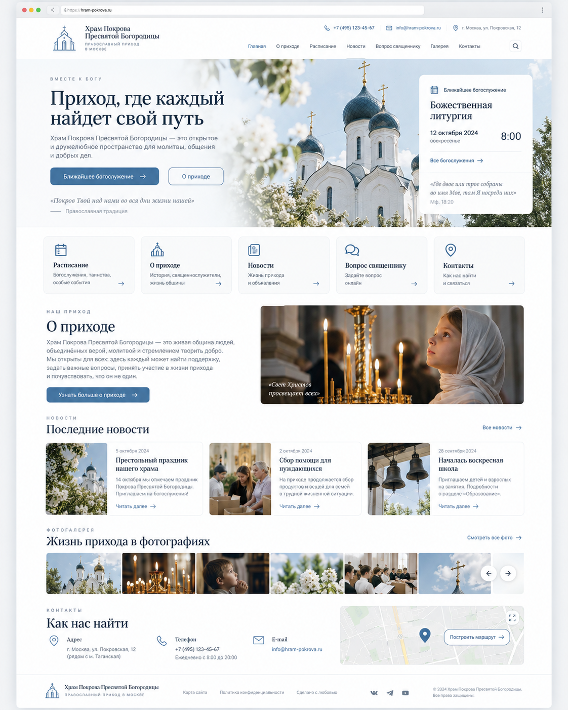
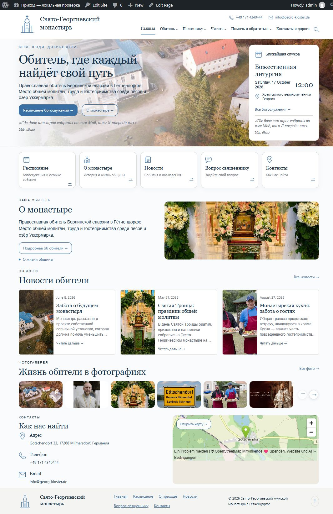
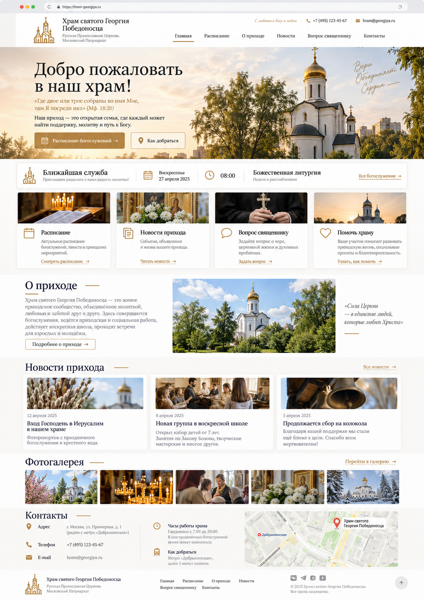
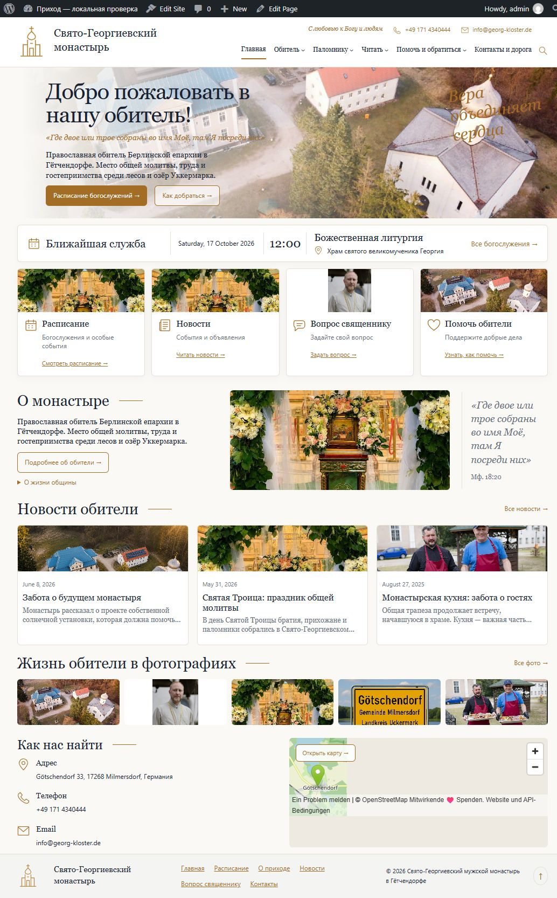

Сравниваются внутренние области одинаковой ширины. Слева исходный PNG без браузерной рамки, справа настоящий локальный WordPress без adminbar. Границы эталона определены вручную с допуском около 2 px; содержимое изображений не изменено. Колонки прокручиваются независимо. Показана ширина 48% от исходной для просмотра пары. Это метод визуальной сверки, а не вычисление процента совпадения.
Реальные монастырские фотографии, тексты, даты и стандартные строки локального WordPress отличаются от примера храма. Они не подменялись и не обрезались ради совпадения. На сервере остаётся 0.3.16. Общее требование 99% не подтверждено.









